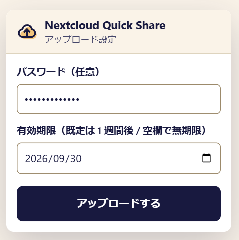
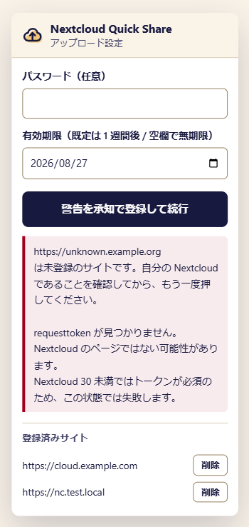
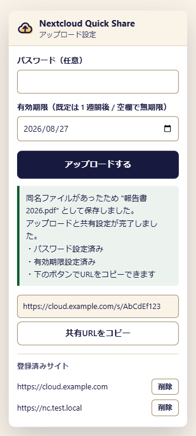

Edge / Chrome 拡張機能 · MV3
開いている Nextcloud から、
そのまま共有リンク。
ツールバーのアイコンを押してファイルを選ぶだけ。パスワードと有効期限を付けた 公開共有リンクが作られ、URL はクリップボードにコピーされます。 サーバー URL の登録も、アプリパスワードの発行も要りません。
要求する権限は activeTab / scripting / storage の 3 つだけ。
特定サイトへの常時アクセス権は宣言していません。

USAGE
手順は 3 つ。設定画面はありません。
自分の Nextcloud にログインした状態のタブで、ツールバーのアイコンを押すところから始まります。
アイコンを押す
ログイン中の Nextcloud のタブで拡張機能のアイコンをクリックします。開いているページのセッションをそのまま使うので、URL の入力は不要です。
パスワードと期限を決める
どちらも任意です。有効期限の既定は 1 週間後、空欄にすれば無期限。当日は Nextcloud に拒否されることがあるため、翌日以降だけを選べます。
ファイルを選ぶ
アップロードと共有リンクの作成が終わると、URL がクリップボードにコピーされます。Files アプリのルートを開いていれば、一覧もその場で更新します。
FEATURES
「アップロードして、リンクを配る」だけを速くする
Nextcloud の画面を何度も往復せずに、共有リンクの作成までを一息で終わらせるための拡張機能です。
設定なしで使える
ログイン中のセッション（Cookie）とページに埋め込まれた data-requesttoken をそのまま使います。サーバー URL もアプリパスワードも登録しません。
作成と同時に保護する
パスワードと有効期限は共有リンクの作成リクエストそのものに含めます。後から設定を足す方式と違い、無防備な公開リンクが一瞬でも存在しません。
URL は自動でコピー
できあがった共有 URL はクリップボードに入ります。チャットやメールにそのまま貼り付けられます。
結果が消えない
ファイル選択でポップアップが閉じても、次に開けば直前の結果と共有 URL を確認できます。コピーし直すボタンも出ます。
同名ファイルを上書きしない
同じ名前のファイルがあれば別名で保存し、どの名前になったかを結果に表示します。既存のファイルを黙って置き換えることはありません。
一覧をその場で更新
Files アプリのルートを開いていれば、アップロード後に一覧を更新します。更新できないバージョンでは 5 秒後に読み込み直し、通知から止めることもできます。
SECURITY
許可したサイトにしか送信しません
ファイルとパスワードを預ける相手だからこそ、送信先の確認を仕組みとして持たせています。
- 常時注入はしない。 全サイトにコンテンツスクリプトを登録する代わりに、
activeTabとchrome.scripting.executeScriptで「アイコンを押したタブに、その瞬間だけ」注入します。 - 渡す前に相手を確かめる。 まず副作用のない検出関数だけを注入し、Nextcloud だと確認できた場合にのみパスワードを引数として渡します。
- トップフレームのみ。 注入先は既定どおりトップフレームなので、ページ内の第三者 iframe に入力値が渡ることはありません。
- 未登録のサイトは二段階承認。 初回は確認のためもう一度ボタンを押す必要があります。承認したオリジンは一覧で確認でき、いつでも解除できます。
Nextcloud と判定できないページでも、警告を読んだうえで登録して実行できます。判定はあくまで誤操作を防ぐ目安で、続けるかどうかは使う人が決める設計です。


RESULT
結果はポップアップにそのまま残ります
ファイル選択ダイアログを開くとポップアップは閉じてしまいますが、結果は次に開いたときに見られます。
- パスワードと有効期限が設定済みかを 1 行ずつ確認できる
- 共有 URL を表示し、ボタンでもう一度コピーできる
- 同名ファイルを避けて別名で保存した場合は、その名前を知らせる
- 承認済みサイトを一覧で確認し、「削除」で登録を解除できる
HOW IT WORKS
標準の WebDAV と OCS API だけで動きます
専用のサーバーアプリや中継サービスは使いません。ブラウザから Nextcloud に直接つなぎます。
設置場所を確定する
サブディレクトリ設置に備え、候補を確度順に並べて status.php を叩き、Nextcloud の JSON が返った候補を webroot として採用します。
WebDAV でアップロード
PUT /remote.php/webdav/<ファイル名>。同名ファイルがあれば名前を変えて保存し、上書きを避けます。
OCS API で共有リンク
POST /ocs/v2.php/apps/files_sharing/api/v1/shares。パスワードと有効期限はこの作成リクエストに含めます。
作成後に PUT /shares/{id} で後追い設定しない理由
後追いだと、設定が入るまでの間だけ無防備な公開リンクが実在してしまいます。
加えて OCS の PUT は本文が application/x-www-form-urlencoded のときしかパラメータとして読まれず、
Content-Type を完全一致で見る実装では ; charset=UTF-8 を添えただけで本文が無視され、
「更新する項目が無い」＝ 400 Bad Request になります。
CSRF 対策との両立
Cookie 認証のリクエストにはサーバー側で CSRF チェックが入ります。どのバージョンでも通るよう、
実行直前に読み直した requesttoken（全バージョンで有効）と
OCS-APIRequest: true（Nextcloud 30 以降で有効）の両方を送ります。
後者は CORS のセーフリスト外でクロスオリジンからは付けられないため、それ自体が防御として働きます。
PRIVACY
開発者はいかなるデータも受け取りません
解析ツール、広告、トラッキング、クラッシュレポート、外部 CDN の類は一切使っていません。 通信する相手は、使う人自身が承認したサーバーだけです。
ブラウザ内に保存するもの（この 2 つだけ）
| 領域 | キー | 内容と目的 | 消えるタイミング |
|---|---|---|---|
storage.sync |
knownOrigins |
承認済みオリジンの配列。意図しないサイトへ認証情報を送らないための許可リスト | アンインストール時（他デバイスにも伝播） |
storage.session |
lastResult |
直近の実行結果（共有 URL を含む）。ポップアップが閉じた後に結果を表示するため | 次にポップアップを開いた時 / ブラウザ終了時 |
要求する権限
| 権限 | 用途 |
|---|---|
activeTab | アイコンを押した瞬間に、そのタブに対してのみ処理を実行するため。常時アクセスできる権限は要求していません |
scripting | 上記のタブへ、アップロード処理を一時的に注入するため |
storage | 承認済みのサイトオリジンを保存するため |
保存しないもの
共有リンクのパスワードは保存しません（実行のたびに入力され、送信後は破棄されます）。 閲覧履歴、ページの内容、フォームの入力内容、Cookie、認証情報も収集・記録しません。 第三者への提供もありません。全文は プライバシーポリシー を参照してください。
SUPPORT
開発者を支援する
この拡張機能は無料で、広告もトラッキングもありません。 役に立ったと思ってもらえたら、開発と保守の支えになります。もちろん任意です。
GitHub Sponsors
GitHub のアカウントからそのまま。月々の継続支援と 1 回かぎりの支援のどちらも選べます。 リポジトリの「Sponsor」ボタンからも同じページへ行けます。
GitHub Sponsors で支援するお金以外の支援も歓迎です。 Issue で不具合や要望を知らせる、 リポジトリに Star を付ける、ストアにレビューを書く — どれも同じくらい助かります。